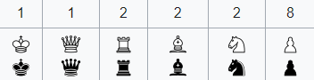

Le jeu des échecs est un pur jeu de stratégie, de réflexion et très légèrement de mémoire
Franchement, il faut VRAIMENT être un génie pour rentrer dans les meilleurs joueurs du monde
Le jeu est composé de 8x8 cases avec des pièces blanche et noir qui s'affronte jusqu'à tué le roi adverse.
Tout le monde commence avec :

8 pion , 2 tour , 2 fou , 2 cavalier , 1 dame et 1 roi
Chaque case ne peut accueillir qu'une seule pièce.
Le jeu d'échecs se déroule en alternant les tours des Blancs et des Noirs, les Blancs commençant la partie. Chaque joueur doit déplacer une de ses pièces à son tour, pouvant éventuellement capturer une pièce adverse située sur la case d'arrivée.
Un coup ne peut déplacer qu'une pièce à la fois. Si une pièce est déplacée sur une case occupée par une pièce adverse, cette dernière est capturée et retirée du jeu.
Contrairement aux dames, la capture n'est pas obligatoire, sauf dans certains cas précis.
Le joueur qui doit jouer est obligé de jouer un coup légal, même si tous les coups possibles sont mauvais. Si un joueur ne peut pas jouer de coup légal, la partie se termine par un pat ou un échec et mat.
Le temps de réflexion, l'attribution des Blancs et le format du tournoi ne sont pas des règles du jeu en lui-même, mais des règles d'organisation pour les différentes formes de parties.
Mettre le roi adverse en 'Echec et Mat' . ce qui consiste à faire un sorte d'être sûr qu'au prochain tour, le roi va mourrir
La position 'Echec' est uniquement lorsque le roi adverse se fait menacer d'être éliminé s'il n'est pas défendu ou s'il ne se déplace pas
| Joueurs d'échecs | elo |
|---|---|
| Maggnus Carlsen | 2831 |
| Fabiano Caruana | 2805 |
| Hikaru Nakamura | 2803 |